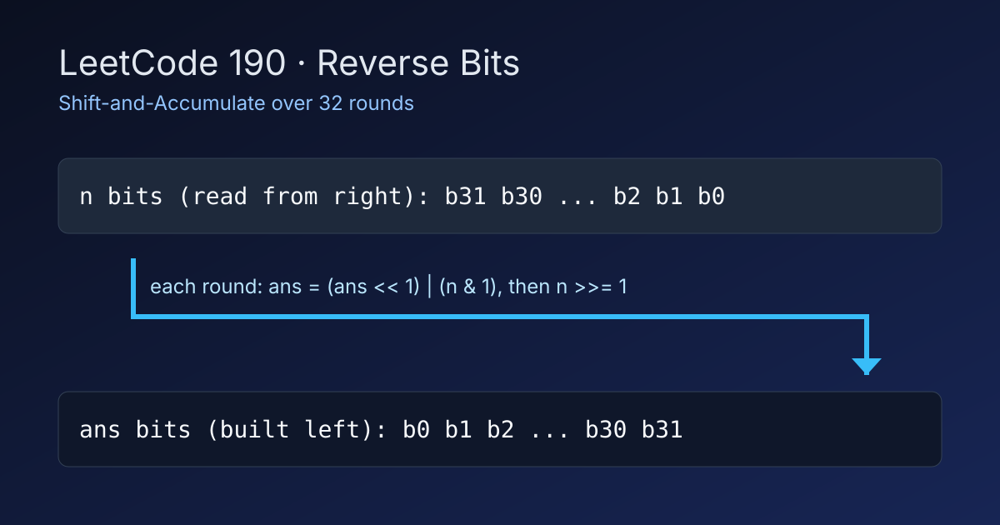

LeetCode 190: Reverse Bits (Bitwise Shift-and-Accumulate)
LeetCode 190Bit ManipulationToday we solve LeetCode 190 - Reverse Bits.
Source: https://leetcode.com/problems/reverse-bits/

English
Problem Summary
Given a 32-bit unsigned integer n, return the value obtained by reversing its bit order.
Key Insight
Read bits from right to left, while building answer from left to right: each round we left-shift ans by 1 and append the current least-significant bit of n.
Brute Force and Limitations
A string-based method converts bits to a binary string, reverses characters, then parses back. It is easy but adds conversion overhead and loses the direct bitwise invariant interviewers expect.
Optimal Algorithm Steps
1) Initialize ans = 0.
2) Repeat 32 times: ans = (ans << 1) | (n & 1); then n >>>= 1 (or logical/right shift equivalent).
3) Return ans.
Complexity Analysis
Time: O(32) (constant).
Space: O(1).
Common Pitfalls
- Using arithmetic right shift where language semantics sign-extend unexpectedly.
- Forgetting fixed 32 rounds (leading zeros are part of reversal).
- Mixing signed/unsigned display behavior with actual stored bit pattern.
Reference Implementations (Java / Go / C++ / Python / JavaScript)
public class Solution {
public int reverseBits(int n) {
int ans = 0;
for (int i = 0; i < 32; i++) {
ans = (ans << 1) | (n & 1);
n >>>= 1;
}
return ans;
}
}func reverseBits(num uint32) uint32 {
var ans uint32 = 0
for i := 0; i < 32; i++ {
ans = (ans << 1) | (num & 1)
num >>= 1
}
return ans
}class Solution {
public:
uint32_t reverseBits(uint32_t n) {
uint32_t ans = 0;
for (int i = 0; i < 32; ++i) {
ans = (ans << 1) | (n & 1);
n >>= 1;
}
return ans;
}
};class Solution:
def reverseBits(self, n: int) -> int:
ans = 0
for _ in range(32):
ans = (ans << 1) | (n & 1)
n >>= 1
return ansvar reverseBits = function(n) {
let ans = 0;
for (let i = 0; i < 32; i++) {
ans = (ans << 1) | (n & 1);
n >>>= 1;
}
return ans >>> 0;
};中文
题目概述
给定一个 32 位无符号整数 n，将其二进制位顺序完全反转后返回结果。
核心思路
从低位到高位读入 n 的每一位，同时把答案左移后拼接该位：ans = (ans << 1) | (n & 1)。循环 32 次即可覆盖全部位（包括前导 0）。
暴力解法与不足
可以先转成二进制字符串、反转字符、再转回整数；实现直观，但引入额外转换，且不如位运算解法直接体现固定宽度与状态转移不变量。
最优算法步骤
1）初始化 ans=0。
2）循环 32 轮：先左移答案并拼接 n 的最低位，再将 n 右移一位。
3）返回 ans。
复杂度分析
时间复杂度：O(32)（常数级）。
空间复杂度：O(1)。
常见陷阱
- 右移操作在不同语言里有符号/无符号差异。
- 没有固定循环 32 次，导致前导 0 丢失。
- 把数值的有符号显示形式和底层位模式混为一谈。
多语言参考实现（Java / Go / C++ / Python / JavaScript）
public class Solution {
public int reverseBits(int n) {
int ans = 0;
for (int i = 0; i < 32; i++) {
ans = (ans << 1) | (n & 1);
n >>>= 1;
}
return ans;
}
}func reverseBits(num uint32) uint32 {
var ans uint32 = 0
for i := 0; i < 32; i++ {
ans = (ans << 1) | (num & 1)
num >>= 1
}
return ans
}class Solution {
public:
uint32_t reverseBits(uint32_t n) {
uint32_t ans = 0;
for (int i = 0; i < 32; ++i) {
ans = (ans << 1) | (n & 1);
n >>= 1;
}
return ans;
}
};class Solution:
def reverseBits(self, n: int) -> int:
ans = 0
for _ in range(32):
ans = (ans << 1) | (n & 1)
n >>= 1
return ansvar reverseBits = function(n) {
let ans = 0;
for (let i = 0; i < 32; i++) {
ans = (ans << 1) | (n & 1);
n >>>= 1;
}
return ans >>> 0;
};
Comments